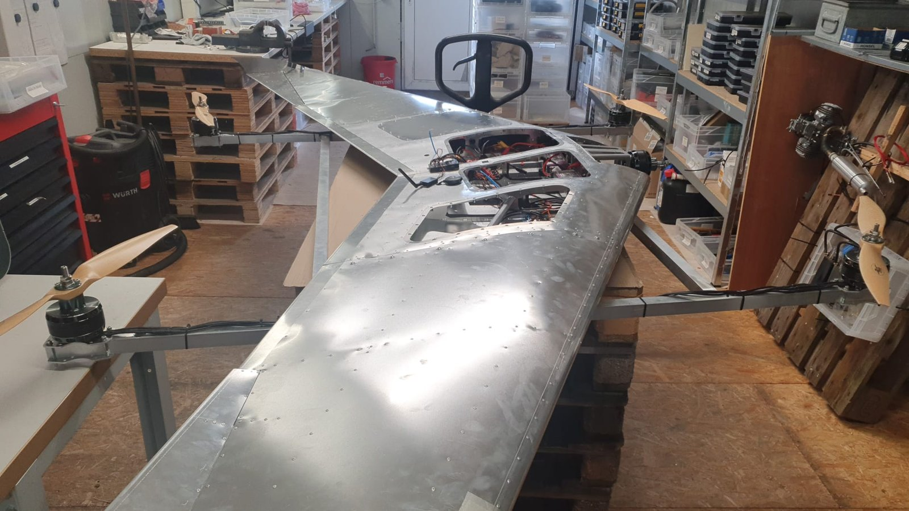
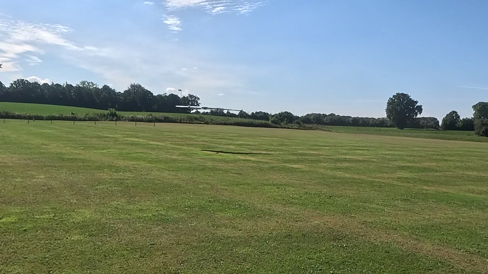
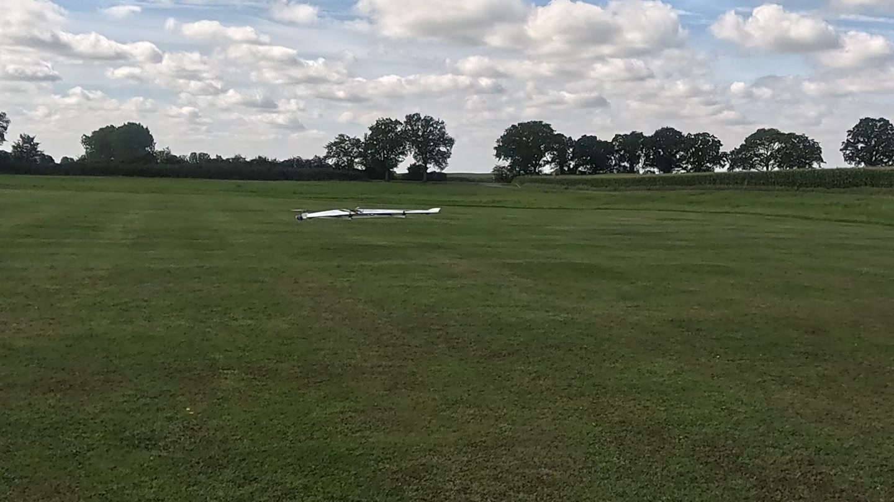
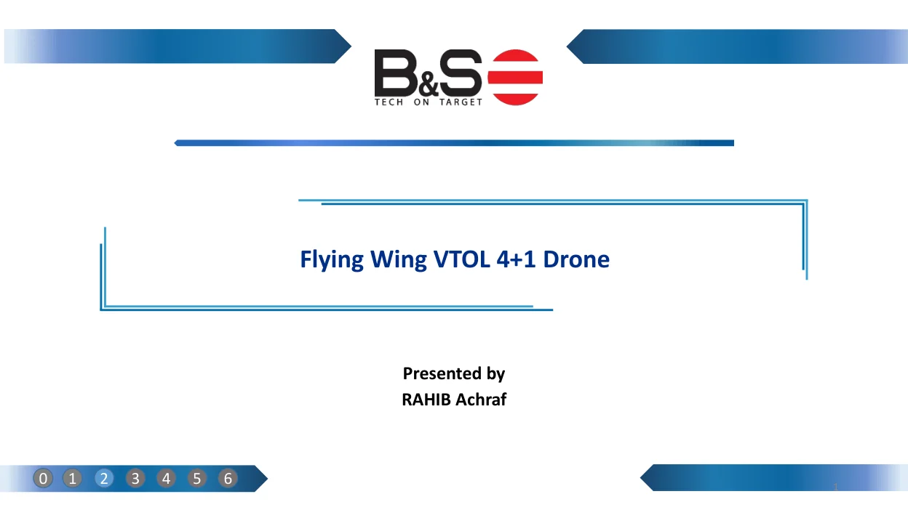
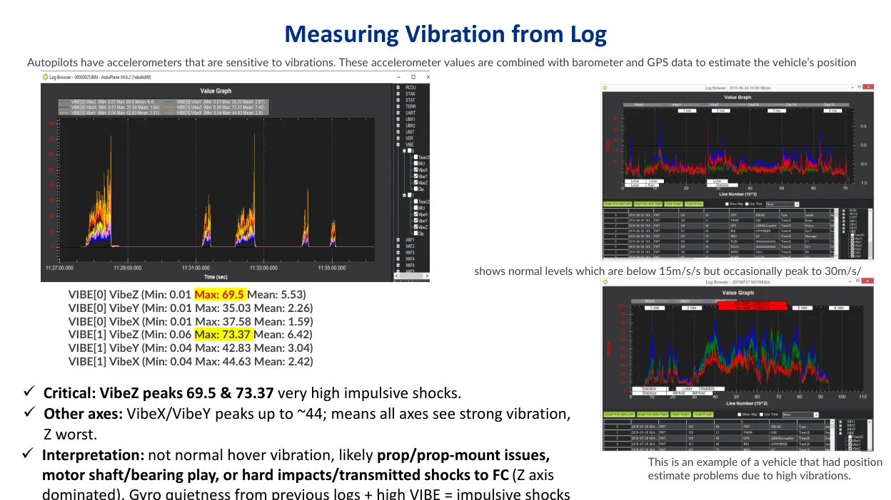
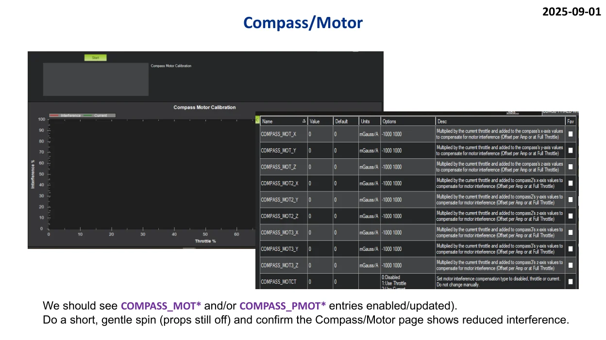
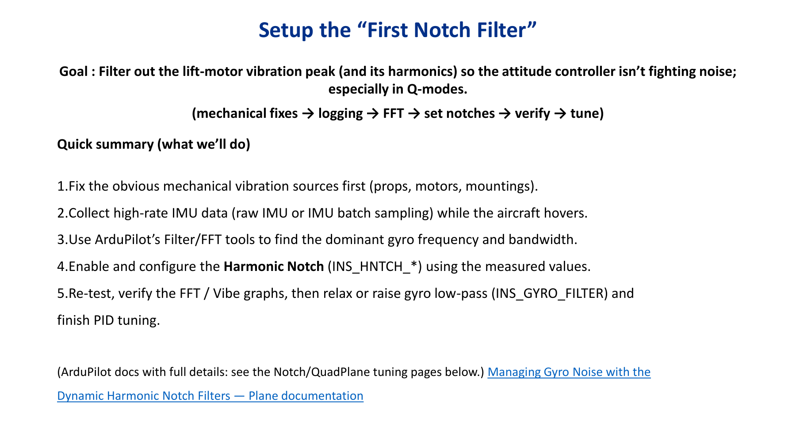

Why I started over
The client brought me a silver 4+1 flying wing that was unstable. I found several missing or incomplete settings during the review. I took responsibility for the flight-control configuration and rebuilt the setup from the beginning, including motor and servo outputs, calibration, sensor checks and failsafes.
Watch the project
What the early tests showed
I joined the field team on live calls, reviewed their recordings and used flight logs to trace how the wing responded. I examined attitude tracking, IMU clipping and vibration, then used FFT data to guide filter and PID changes between tests.


From the rebuild to stable flights
The client team operated the aircraft on site while I led the configuration, analysis and remote support. After the rebuild and iterative tuning, they achieved stable flights. The recordings span several checks, so the captions describe what each clip shows.
From the project documents
Inside the report · 34 pages
VTOL engineering report
34-page public edition of my project report. Three map-bearing source pages are omitted.

Read the PDF here
Project-specific analysis and support documentation. Public editions retain the existing location redactions; recommendations are not standalone proof of successful validation.
Inside the report · 13 pages
Vibration and notch-filter analysis
13-page engineering work sample covering vibration review, logging and filter setup.

Read the PDF here
Project-specific analysis and support documentation. Public editions retain the existing location redactions; recommendations are not standalone proof of successful validation.
Inside the report · 5 pages
Notch-filter and PID review
5-page follow-up work sample covering compass interference, FFT and filter review.

Read the PDF here
Project-specific analysis and support documentation. Public editions retain the existing location redactions; recommendations are not standalone proof of successful validation.
Inside the report · 2 pages
VTOL flight-log analysis
An edited public work sample from my client report. It shows how I structured the investigation, interpreted attitude response and proposed a verification workflow.

Read the PDF here
Original client identifiers, raw logs, maps and parameter-file downloads are not included. Figures describe that specific engagement; they are not universal tuning instructions.
Project record
I led configuration, analysis and remote engineering support. The client team operated the aircraft on site. The video gallery includes different stages of testing, including earlier handling checks and follow-up hover footage.